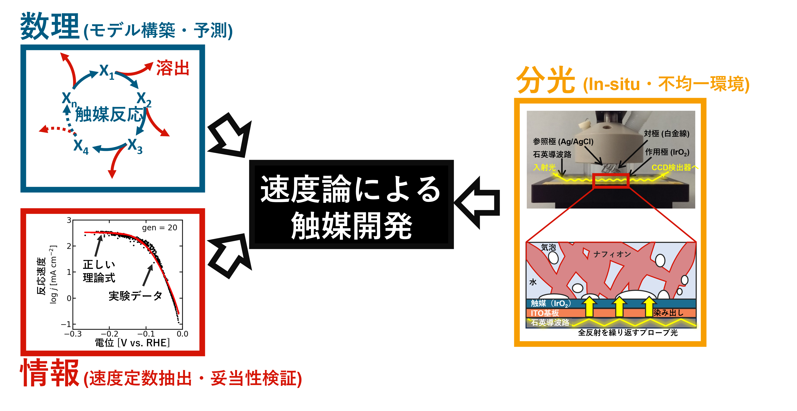

研究室参加をご検討の方へ
数理触媒研究チームは、数理・情報・実験を組み合わせることで電極触媒反応を理解しようとしています。投げたボールがいつどこに落ちるかは正確に予測できます。では、触媒反応も同じ精度で理解することはできるでしょうか？つまり、初期条件を指定すれば、どのように反応が進み、いつ止まるかを予測できるでしょうか？このような問いは化学系を対象としていますが、解くためには定量的な反応速度式（応用数理）と、実験・理論の整合性を検証するデータ解析（情報科学）が必要です。このため、当研究室には多彩なメンバーが集まり、互いに学びながら研究を進めています。
今取り組んでいる問いの例
- どうすれば触媒反応のメカニズムを実験データから特定できるか？
- どのように実験と理論を組み合わせれば、触媒反応を予測することができるか？
- 触媒反応はどのような法則に従うのか？
- どうすれば化学反応ネットワーク理論によりデータ解析アルゴリズムを高度化できるか？
- 触媒系の反応速度や寿命には物理的な限界があるのか？
- 効率と持続性を両立する化学反応ネットワークとはどのようなものか？

数理・情報・実験の融合により電極触媒反応の速度論を理解しようとしています。
このような方を歓迎します
求める人物像
触媒反応の新たな理解に向けて、挑戦を共にしてくれる仲間を探しています。既存の常識を刷新するような新たな研究領域の開拓は簡単なことではありません。既存分野の研究であっても高い専門性が求められますが、異分野融合研究では複数の分野を理解しながら新しい価値を生み出すことが求められます。すなわち、既存の常識を変えるには、旧常識と新常識の両基準で優れている必要があります。当然ながら、そのためには継続的な学習と成長が必要になります。異分野の研究者がいる環境とは、毎日新たな視点や知識に出会う環境です。その分、自分がまだ知らないことに向き合う場面も少なくありません。このため、新しいことを学ぶことを心から好きだと思える方でないと、この研究環境は苦労が多く感じられるでしょう。一方で、難問をパズルとして楽しみ、それを乗り越えるために必要なスキル習得も楽しめる方であれば、この研究室はきっと合うはずです。
このような理由により、私たちがメンバー選びで最も重要としていることは、現在持っている知識や技術ではなく、新しいことを学び続ける姿勢です。どれほど高い専門性を持つ方であっても、学び続けることでさらに大きな成果につながります。このため、学生、博士研究員、エンジニアなど、職位や経験を問わず、好奇心旺盛で学習意欲の高い方を仲間として求めています。良いアイデアは発案者問わず歓迎です。既存の常識に挑戦し、新しい見方を切り拓くことにワクワクしますか？もしそうなら、ぜひ読み続けてください。
専門性
向上心に加えてもう一つ新メンバーに期待することは、関連分野における確かな専門性です。例えば
- 電気化学を学んできたが、Pythonも勉強してみたい方
- 数学を活かして実際の問題に取り組みたい方
- 化学工学だけでなく、反応機構の基礎的理解にも興味がある方
- 理論物理の知識を活かして、複雑な実験系のモデル化に挑戦したい方
- 情報科学の専門性を活かして、実際に最先端の実験データを解析してみたい方
など。すべての分野に精通している必要はありません。実際、現在のメンバーの多くはまず一つの専門性から出発し、分野の枠を超える研究をするように成長しました。ただし、私たちの研究領域とほとんど接点がない方は、応募前にいずれかの分野を独自に学んでいただくことをお勧めします。
特に、これまで独学で何らかしらのスキルを身につけて来られた方を歓迎します。今は指導者がいなくても、オンライン教材や生成AIの発展により独学で何でも勉強できるような時代です。独学力は多用な専門家が集まる当研究室で活躍する上で大いに役立ちます。何を学ぼうか迷われた場合、Python、力学系解析、電気化学、機械学習、化学工学などは研究室との関連性だけでなくオンライン教材も多くお勧めですが、私たちがまだ気づいていない新技術を身に着けた方の応募も歓迎します。
当研究室では以下のような研究を行っています：
- 電気化学・電極触媒化学
- その場分光（in-situ分光）による反応機構の追跡
- 触媒機構の速度論モデルの開発
- 数理モデルの構築・力学系解析
- 数値シミュレーションによる可視化 (Python)
- データ解析アルゴリズムの開発 (Python)
この研究室で得られること
- 誠実で風通しの良い研究環境
- 研究活動に直接必要な技術に加え、論理的思考力や科学的思考力
- 自分だけの独立したテーマを立ち上げて推進する機会
- 化学・工学・数学・情報科学にまたがる学際的な共同研究
- 理論と実験の両方に触れる機会
- 幅広く応用できる科学的・技術的スキルの習得
- 独立研究者として成長するための指導
ご興味を持ってくださった方へ
ここまで読んで興味を持ってくださった方は、私たちの最近の論文や研究活動をご覧の上、ご連絡ください。その際、
- 現在のご所属と略歴
- 研究上、興味のあること
- 私たちの研究テーマの中で何に最も惹かれるか
- 関連する技術や経験
などを添えてください。
なお、この研究室は計算化学の研究室ではなく、計算機やGPUサーバーへのアクセスがありません。このため、現時点ではDFTやMDのみをご専門とする方は基本的にお断りしています。ただし、新しい計算手法(大正準集団DFT、溶媒環境のモデル化など)を開発できる方で、電極触媒反応の新たな理論モデルを構築できる方であればその限りではありません。
連絡先
もし私たちの研究室への応募をお考えの場合、現在の募集状況をこちらからご確認ください。ご質問についてはこちらから直接お問い合わせください。